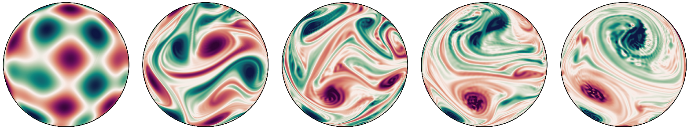

Vakonomic Fluids
Preprint
We introduce a novel structure-preserving simulation of incompressible fluid flow by discretizing it as a Hamiltonian system on a space of matrices, based on Koopman operator theory. This "matrix-hydrodynamics" approach preserves the geometric structure of the underlying physics, including Casimir invariants and a discrete version of Kelvin's circulation theorem, allowing it to capture intricate vortical structures while remaining numerically stable even on coarse meshes.